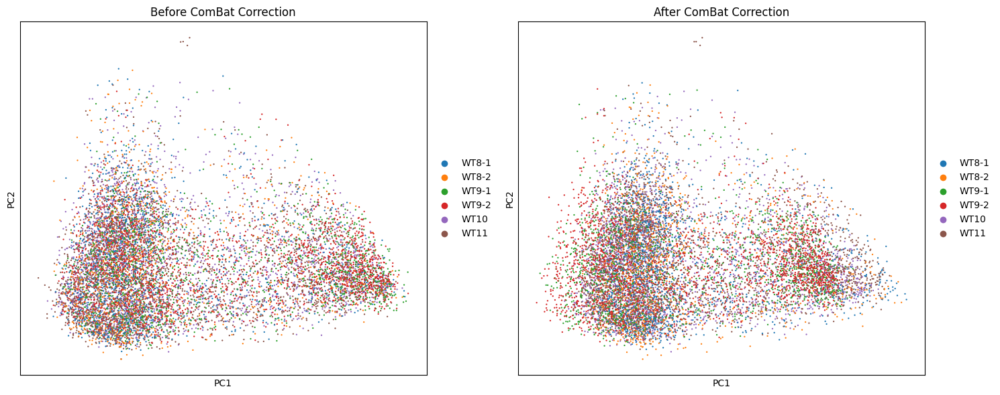
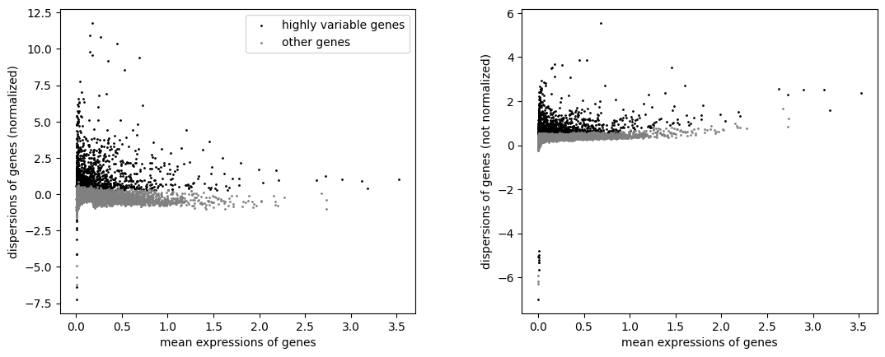
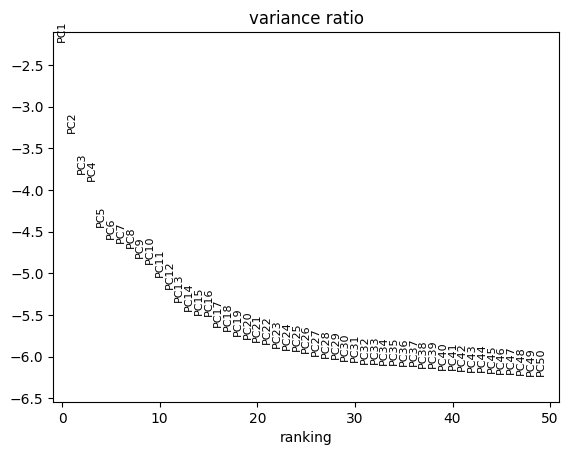
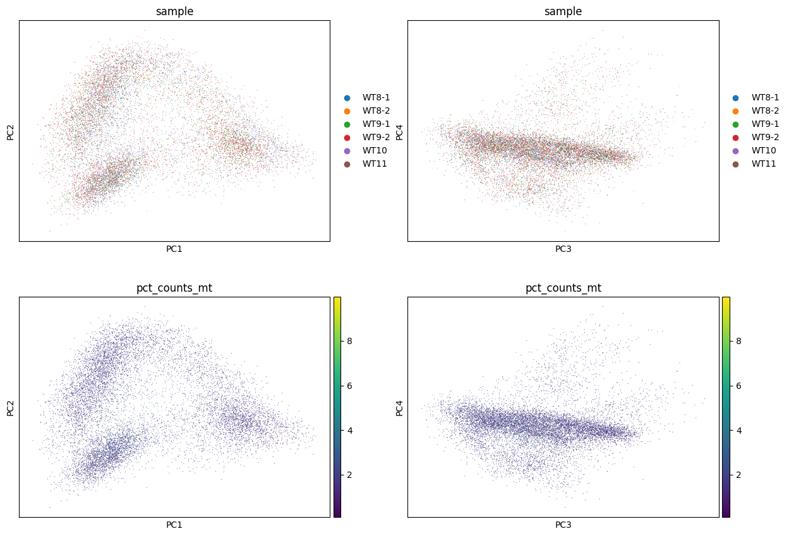
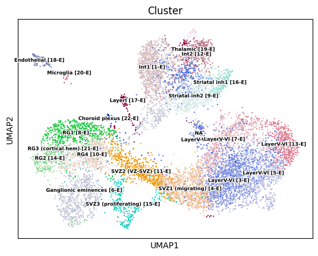
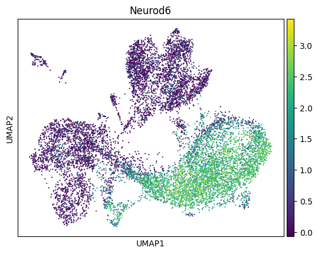
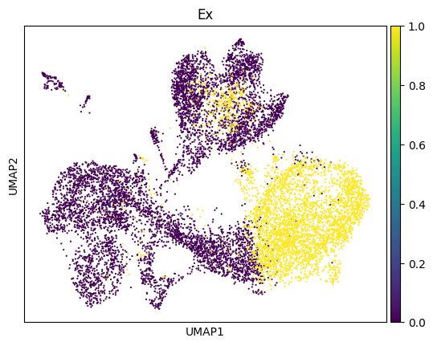
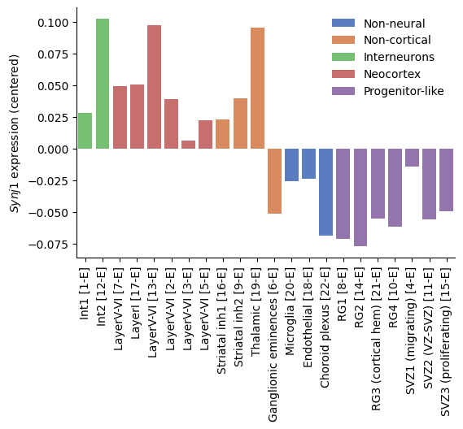

[1]:
%reload_ext autoreload
%autoreload 2
[2]:
import numpy as np
import pandas as pd
import scanpy as sc
import seaborn as sns
import matplotlib.pyplot as plt
df = pd.read_csv("../data/mRNA/E14_combined_matrix.txt.gz", sep="\t")
adata_rna_mcc = sc.AnnData(df.set_index("Gene").T)
[3]:
df = pd.read_csv("../data/mRNA/GSE75804_combined.counts.txt", sep="\t")
df = df.set_index("id").T
df["obs"] = df.index.str.extract(r"^(.*)_L0").values.flatten()
df = df.groupby("obs", sort=False).sum()
adata_rna_mesc = sc.AnnData(df)
[4]:
# Add sample metadata: WT8-1, WT8-2, WT9-1, WT9-2, WT10, WT11
adata_rna_mcc.obs["sample"] = adata_rna_mcc.obs_names.str.replace(
r"^.*-(WT.*)_.*$", r"\g<1>", regex=True
)
adata_rna_mcc.obs["sample"].value_counts()
[4]:
sample
WT11 2959
WT10 2409
WT9-2 1937
WT9-1 1441
WT8-1 1426
WT8-2 897
Name: count, dtype: int64
[5]:
adatas = {"mesc": adata_rna_mesc, "mcc": adata_rna_mcc}
1. Quality control#
[6]:
for key in adatas:
adatas[key].var["mt"] = adatas[key].var_names.str.startswith("mt-")
# Calculate QC metrics
sc.pp.calculate_qc_metrics(adatas[key], qc_vars=["mt"], log1p=True, inplace=True)
# 1. Remove cells that contain more than 10% mitochondrially derived transcripts
sc.pp.filter_cells(adatas[key], min_genes=0) # Calculate n_genes_by_counts first
adatas[key] = adatas[key][adatas[key].obs.pct_counts_mt < 10, :]
# 2. Only keep cells with at least 500 genes detected
sc.pp.filter_cells(adatas[key], min_genes=500)
# 3. Among the selected cells, only genes that are present in > 10 cells and
# those having > 60 transcripts summed across all the selected cells are considered
sc.pp.filter_genes(adatas[key], min_cells=10)
gene_counts = np.sum(adatas[key].X, axis=0)
if hasattr(gene_counts, 'A1'): # if sparse matrix
gene_counts = gene_counts.A1
keep_genes = gene_counts > 60
adatas[key] = adatas[key][:, keep_genes]
print(f"After QC: {adatas[key].n_obs} cells, {adatas[key].n_vars} genes")
/opt/miniconda3/lib/python3.12/site-packages/scanpy/preprocessing/_simple.py:166: ImplicitModificationWarning: Trying to modify attribute `.obs` of view, initializing view as actual.
adata.obs["n_genes"] = number
After QC: 48 cells, 11400 genes
/opt/miniconda3/lib/python3.12/site-packages/scanpy/preprocessing/_simple.py:166: ImplicitModificationWarning: Trying to modify attribute `.obs` of view, initializing view as actual.
adata.obs["n_genes"] = number
After QC: 10932 cells, 12982 genes
2. Normalization#
[9]:
for adata in adatas.values():
adata.layers["counts"] = adata.X.copy()
sc.pp.normalize_total(adata)
sc.pp.log1p(adata)
/var/folders/r1/8ss2m8yd3616s_v12l580jcw0000gn/T/ipykernel_88209/1473823888.py:2: ImplicitModificationWarning: Setting element `.layers['counts']` of view, initializing view as actual.
adata.layers["counts"] = adata.X.copy()
3. Batch correction#
[11]:
# Apply ComBat batch correction using sample as batch variable
print("Applying ComBat batch correction...")
print(f"Batch variable (sample) distribution:")
print(adatas["mcc"].obs["sample"].value_counts())
# Use scanpy's combat implementation for batch correction
sc.pp.combat(adatas["mcc"], key='sample')
print("ComBat batch correction completed.")
Applying ComBat batch correction...
Batch variable (sample) distribution:
sample
WT11 2939
WT10 2376
WT9-2 1928
WT9-1 1434
WT8-1 1389
WT8-2 866
Name: count, dtype: int64
ComBat batch correction completed.
[12]:
# Visualize batch effects before and after correction
import matplotlib.pyplot as plt
# For comparison, let's create a version without batch correction
adata_no_combat = adatas["mcc"].copy()
adata_no_combat.X = adata_no_combat.layers["counts"].copy()
sc.pp.normalize_total(adata_no_combat)
sc.pp.log1p(adata_no_combat)
# Calculate PCA for both versions
sc.tl.pca(adata_no_combat)
sc.tl.pca(adatas["mcc"]) # This will use the ComBat-corrected data
# Plot comparison
fig, axes = plt.subplots(1, 2, figsize=(15, 6))
# Before ComBat
sc.pl.pca(adata_no_combat, color='sample', title='Before ComBat', ax=axes[0], show=False)
axes[0].set_title('Before ComBat Correction')
# After ComBat
sc.pl.pca(adatas["mcc"], color='sample', title='After ComBat', ax=axes[1], show=False)
axes[1].set_title('After ComBat Correction')
plt.tight_layout()
plt.show()
print("PCA plots show data distribution before and after ComBat batch correction")
print("ComBat should reduce sample-specific clustering while preserving biological variation")
WARNING: adata.X seems to be already log-transformed.

PCA plots show data distribution before and after ComBat batch correction
ComBat should reduce sample-specific clustering while preserving biological variation
3. Dimensionality Reduction#
[13]:
# Find highly variable genes on batch-corrected data
# Note: ComBat correction has already been applied to adatas["mcc"].X
sc.pp.highly_variable_genes(adatas["mcc"], n_top_genes=2000, batch_key="sample")
/opt/miniconda3/lib/python3.12/site-packages/scanpy/preprocessing/_highly_variable_genes.py:305: RuntimeWarning: invalid value encountered in log
dispersion = np.log(dispersion)
/opt/miniconda3/lib/python3.12/site-packages/scanpy/preprocessing/_highly_variable_genes.py:305: RuntimeWarning: invalid value encountered in log
dispersion = np.log(dispersion)
/opt/miniconda3/lib/python3.12/site-packages/scanpy/preprocessing/_highly_variable_genes.py:305: RuntimeWarning: invalid value encountered in log
dispersion = np.log(dispersion)
/opt/miniconda3/lib/python3.12/site-packages/scanpy/preprocessing/_highly_variable_genes.py:305: RuntimeWarning: invalid value encountered in log
dispersion = np.log(dispersion)
/opt/miniconda3/lib/python3.12/site-packages/scanpy/preprocessing/_highly_variable_genes.py:305: RuntimeWarning: invalid value encountered in log
dispersion = np.log(dispersion)
[14]:
sc.pl.highly_variable_genes(adatas["mcc"])

[15]:
sc.tl.pca(adatas["mcc"], use_highly_variable=True)
sc.pl.pca_variance_ratio(adatas["mcc"], n_pcs=50, log=True)
/opt/miniconda3/lib/python3.12/site-packages/scanpy/preprocessing/_pca.py:385: FutureWarning: Argument `use_highly_variable` is deprecated, consider using the mask argument. Use_highly_variable=True can be called through mask_var="highly_variable". Use_highly_variable=False can be called through mask_var=None
warn(msg, FutureWarning)

[16]:
sc.pl.pca(
adatas["mcc"],
color=["sample", "sample", "pct_counts_mt", "pct_counts_mt"],
dimensions=[(0, 1), (2, 3), (0, 1), (2, 3)],
ncols=2,
size=2,
)

[17]:
sc.pp.neighbors(adatas["mcc"])
OMP: Info #276: omp_set_nested routine deprecated, please use omp_set_max_active_levels instead.
[18]:
sc.tl.umap(adatas["mcc"])
[20]:
cluster_df = pd.read_csv("../data/mRNA/E14_combined_matrix_ClusterAnnotations.txt", sep="\t")
cluster_df["CellID"] = cluster_df["CellID"].str.replace(".", "-")
adatas["mcc"].obs = adatas["mcc"].obs.merge(
cluster_df, left_on=adatas["mcc"].obs_names, right_on="CellID", how="left"
).set_index(adatas["mcc"].obs_names)
[21]:
adatas["mcc"].obs["Ex"] = adatas["mcc"].obs["Cluster"].str.startswith("LayerV-VI")
# isin([
# "LayerV-VI [3-E]", "LayerV-VI [5-E]", "LayerV-VI [13-E]"
# ])
[22]:
adatas["mcc"].obs["Cluster"].value_counts()
[22]:
Cluster
LayerV-VI [3-E] 1070
Int1 [1-E] 1030
LayerV-VI [2-E] 902
SVZ1 (migrating) [4-E] 849
LayerV-VI [5-E] 804
Ganglionic eminences [6-E] 765
LayerV-VI [7-E] 663
Striatal inh2 [9-E] 621
RG1 [8-E] 620
RG4 [10-E] 605
SVZ2 (VZ-SVZ) [11-E] 599
LayerV-VI [13-E] 512
Int2 [12-E] 477
RG2 [14-E] 336
SVZ3 (proliferating) [15-E] 316
Striatal inh1 [16-E] 267
Thalamic [19-E] 151
LayerI [17-E] 151
Endothelial [18-E] 90
RG3 (cortical hem) [21-E] 44
Microglia [20-E] 32
Choroid plexus [22-E] 27
Name: count, dtype: int64
[24]:
'Slc17a7' in adatas["mcc"].var_names
[24]:
True
[27]:
sc.pl.umap(
adatas["mcc"],
color="Cluster",
size=10,
legend_loc='on data', # This adds cluster labels directly on the plot
legend_fontsize=6,
legend_fontoutline=2
)
sc.pl.umap(
adatas["mcc"],
color="Neurod6",
size=10
)
sc.pl.umap(
adatas["mcc"],
color="Ex",
size=10,
ncols=3
)



[28]:
with open("../data/mRNA/Bulk Cluster Ubiquitous.txt", "r") as f:
ubiquitous_genes = pd.unique(pd.Series(f.read().split("\t")))
adatas["mcc"].var["ubiquitous"] = adatas["mcc"].var_names.isin(ubiquitous_genes)
adatas["mcc"].var["ubiquitous"].value_counts()
[28]:
ubiquitous
False 10079
True 2903
Name: count, dtype: int64
[37]:
adatas["mesc"].var["ubiquitous"] = adatas["mesc"].var_names.isin(ubiquitous_genes)
adatas["mesc"].var["ubiquitous"].value_counts()
[37]:
ubiquitous
False 8690
True 2710
Name: count, dtype: int64
[29]:
rs = {}
for cluster in adatas["mcc"].obs["Cluster"].dropna().unique():
sub_adata = adatas["mcc"][adatas["mcc"].obs["Cluster"] == cluster]
subX = sub_adata[:,sub_adata.var["ubiquitous"]].X
rs[cluster] = sub_adata[:, "Synj1"].X.flat - np.mean(subX, axis=1)
rs[cluster] = np.mean(rs[cluster])
[30]:
subclass = {
"Neocortex": [17, 13, 2, 3, 5, 7],
"Interneurons": [1, 12],
"Progenitor-like": [4, 8, 10, 11, 14, 15, 21],
"Non-neural": [18, 20, 22],
"Non-cortical": [6, 9, 16, 19]
}
subclass = {str(n): k for k, v in subclass.items() for n in v}
[31]:
from utils import out_dire
[32]:
df = pd.Series(rs) - np.mean(list(rs.values()))
df = df.to_frame("Synj1").sort_index().reset_index(names="Cluster")
df["class"] = df.Cluster.str.replace(
r"^.*\[(.*)-E\].*$", r"\g<1>", regex=True
).map(subclass)
# df["Cluster"] = df["Cluster"].str.replace(
# r"^(.*)\w\[.*-E\]$", r"\g<1>", regex=True
# )
df["Cluster"] = pd.Categorical(
df["Cluster"],
categories=df.sort_values("class")["Cluster"],
ordered=True
)
fig, ax = plt.subplots(figsize=(6, 4))
sns.barplot(data=df, x="Cluster", y="Synj1", hue="class", palette="muted", ax=ax)
ax.xaxis.set_tick_params(rotation=90)
ax.set(xlabel=None, ylabel=r"$Synj1$ expression (centered)")
ax.spines[["top", "right"]].set_visible(False)
ax.legend(frameon=False, title="")
fig.savefig(f"{out_dire}/appl_synj1_rna_barplot.pdf", bbox_inches="tight")

[49]:
subX = adatas["mcc"][:,adatas["mcc"].var["ubiquitous"]].X
r = adatas["mcc"][:, "Synj1"].X.flat - np.mean(subX, axis=1)
np.mean(r[adatas["mcc"].obs["Ex"].values.astype(bool)])
[49]:
-0.05303231454626753
[41]:
subX = adatas["mesc"][:,adatas["mesc"].var["ubiquitous"]].X
r = adatas["mesc"][:, "Synj1"].X.flat - np.mean(subX, axis=1)
np.mean(r)
[41]:
-0.32027128
[71]:
# CPM of Synj1
for k, v in adatas.items():
gene_count = v[:,"Synj1"].layers["counts"].flatten()
cell_count = v.layers["counts"].sum(axis=1)
avg_cpm = (gene_count / cell_count).mean() * 1e6
print(f"Average CPM of Synj1 in {k}: {avg_cpm:.2f}")
Average CPM of Synj1 in mesc: 26.04
Average CPM of Synj1 in mcc: 55.68
[73]:
adatas_cpm = {"mesc": adatas["mesc"].copy(), "mcc": adatas["mcc"].copy()}
for k, v in adatas_cpm.items():
v.X = v.layers["counts"]
sc.pp.normalize_total(v, target_sum=1e6)